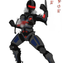
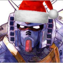

CevVile - Cev
24-Jul-19 12:36 AM
[18/2 AR] Open rp - Maroo’s Bazaar
~On the many walls and of the relays throughout the origin system, a simple poster was plastered in an effort to seek the attention of the many tenno who walked past on a daily basis.~
{kind=link}
~The landing bay of Maroo’s bazaar was abuzz with activity, Tenno poured in and out with supplies and various other trinkets. The faint sound of music could be heard in the distance emanating from what appeared to be a small grineer ship at the end of the dock. https://www.youtube.com/watch?v=pAgnJDJN4VA a tenno could be seen sat just inside one of the engines tinkering away in time to the music. Just in front of the ship was a pile of various orokin goodies ranging from void keys to a plethora of ayatan.~

Rozencratz - Sonera
29-Jul-19 07:17 AM
---A blue blurr is whizzing down the dock with such speed that it manages to kick paper and loose light objects in to a gust of wind as it ran by. A Wukong twirls around the crowd, weaving left and right, dodging people with such natural grace, such precision that it does not even touch anyone despite it’s enormous speed.---
Sonera
Where is it? Where where WHERE?! Grineer right? Right?! I sprinted down the hanger, my eyes franticly searching for the grineer vessel as I twirl around the people in my path, no time for them! Must find vessel!
Didn’t take me too long to finally spot the ship at the end of the hangar and such endless joy overtake me at the sight that I have neglected the fact that I was running and max speed, my feet numbing from the overflow of this emotion, feeling as if I’m floating. But, I’m not floating and due to this I stumble over my own feet Ah no wait WAIT WAI- sending me rolling forward like a barrel, pushed in to a vicious tumble by my previous running speed.
I feel my head hitting the floor over and over before I skid to a stop on my belly just a few paces from the ship, my face dragging all the oily uglyness from the floor.
(edited)
Daakjenaar - Kamos & Atela
29-Jul-19 03:17 PM
KAMOS & ATELA
Well, as opposed to the hyperactive Wukong flying all over the place... The two had seen the posters. Those advertisements had been enough to get their attention, clearly. Not abouf the floofs themselves. Mostly pay, above all else. Pay, boredom, and a variety of other things. The two stood side-by-side, choosing to walk their way through the crowd. Occasionally, one of them would have to nudge someone out of the way, but still. Slow and steady, for now. Onward to that Grineer ship.
"Are we seriously stealing floofs? Of all things?" Atela mumbled. She had agreed, of course, but this was all so absurd. There may have been a market for them, but... "Why not a shipment of weapons? Supplies? What kind of Corpus ship carries floofs?"
"I don't understand why people like floofs. But, they said there would be money." Kamos, ever available with a simple answer. He shrugged it off, heading onward to that... awfully ugly ship. What kinda Tenno flies one of those? "At least it's better than the last ship we raided, with the-"
"Do not bring that up. Ever again. I've had enough of that to last a lifetime." Yeah, Atela was just gonna go ahead and cut him off there. Juuuust gonna never speak of that again.

Kelimnac - Dominus
29-Jul-19 04:03 PM
DOMINUS
"Much obliged. Be safe out there." His fellow Tenno nodded once, and then loped off towards another deal amongst the throng of trading operatives and Warframes. Dominus double-checked that the ship's inventory had updated. He'd needed some spare parts for the Orbiter in the event of a malfunction. Even with most of the systems running perfectly, he and Intellectus could never be too careful. Noting the time, he extricated himself from the pack of traders and began making his way through the crowd, aiming towards the one small Grineer vessel in the dockyards. As he goes, he questions why exactly he was taking on a job to steal floofs of all things.
Then he notices all of the Ayatan goodies in front of the ship, and he remembers precisely why. He needed exactly one more Amber Star to get his second statue running at full capacity. If he could get that, he could finally start looking into getting a third one. The movements were so hypnotic...
It was as he finally reached the ship that he saw the Wukong faceplanted in front of it. Thankfully his Warframe couldn't show emotion. Otherwise the bafflement on his face would palpable.
CevVile - Cev
10-Aug-19 12:45 AM
Cev:
At the sound of the face-planting Wukong, the Tenno’s head poked out from around the edge of the engine.
“What the muck is going on?” Cev walked out from where he was hidden approaching the group, “Sonera? What the muck are you doing,” he flatly retorted, shaking his head as he set his tools aside. His Octavia stood to the side, music blaring from the speakers on its arms.
He sighed and turned towards the others approaching. “Ah hey, what can I do for you all today?”
(edited)
Rozencratz - Sonera
21-Aug-19 07:17 AM
Sonera
"Bljah!" I spit out the dirt that got scraped up in to my metal mouth (not that it matters as I can't taste it but it's the principal!) "Ew...relays need scrubbing" I mumble under my breath before I hear someone calling my name. I whip my head up to spot Cev and smile. I quickly push myself from the floor and pat myself down from the dirt that I picked up during that slide
"Ah! I'm here! You said heist! Yes yes! I want in!"
I boom out as I look to the side at the others, smiling and waving at them with the energy of a rabbit during mating season.
Kelimnac - Dominus
25-Aug-19 07:12 AM
DOMINUS
The Excalibur tilts his head in further confusion at the pure energy being exuded by the Wukong in front of him. An idle part of his mind briefly considered the scientific possibilities of harnessing that energy as a power source. Ultimately, the moral side of his mind dismissed it as unethical, and he turned back to the general area the music was stemming from, nodding.
"Like they said. Heard tell a Tenno needed a crew for a job, came to offer my services. I don't know why floofs are so valuable as to merit a heist, but I know better than to ask questions for that sort of thing. Callsign is Dominus. Specialty, if I have any that is, lies in combat, tactics, and strategic planning. That said, I can do stealth to a decent degree if I've got the right kit. Pleased to meet you all."
It was always easier to talk to other people when it was business. Even if the business involved working with a grumbling duo and what well could be a hyperactive, talking chimpanzee that had learned how to use Transference. You got used to interesting characters in this line of work.
Daakjenaar - Kamos & Atela
25-Aug-19 12:56 PM
KAMOS & ATELA
Side by side, as always. The two Tenno kept moving, even if they were both a tad distracted by... well, whatever weird thing Sonera was doing today. Atela was already dreading with the Wukong, and Kamos was really just glad there were more familiar faces here. Seems to be how it always went. The two just kept mumbling to each other for a moment, before even bothering to answer Cev's question. It was impossible to tell what they were saying, but things were indeed said.
"...Yes. Yes. A heist was mentioned, all evidence points towars you being the source of the message. I think it's obvious why we're here." Friendly as always, that Atela. She shook her head, exhasperated already by this. "So, we're here to do that. Take floofs, for whatever reason, and make money."
CevVile - Cev
09-Sep-19 09:15 PM
Cev:
The color in Cev’s face drained as Sonera mentioned the heist, realization hitting him like a volt empowered Orbiter. “I knew I forgot someone,” he muttered under his breath, mentally kicking himself.
“Okay Okay,” He said grinning as the Wukong waved with enough energy to power an entire relay for decades. How does she just keep going like that. Cev thought as he turned his focus back to the others as they spoke. A confused look took over his face for a moment before he shook his head. Recovering with a smile, he held a hand out to Dominus. “Good to Meet ya mate Just call me Cev.”
He turned his head to Atela and Kamos a large grin filling his face. “Who would have thought that three RU mates would come, thought Disruptis would have jobs for ya’ll or something.”
(edited)
Rozencratz - Sonera
10-Sep-19 06:44 AM
Sonera
A expression of shock twisted my Wukong’s metal mask, mouth gaping wide as my void black eyes gaze at Dominus. “You no know why floofs are so valuable?! They bring joy! The brightest feeling there is!” I let out a laugh, clapping my hands two times like a seasoned spanish dancer “I take I take! If you no need of them!” I playfully wink at him, my tail swishing to the left behind me.
But then I freeze, as if a sudden and horrific realization hit me, my gaze slowly traveling to Cev, my voice coming out in a silent hush as if the answer to the question I’m about to ask him will break me “We…do…get to keep some right?”
(edited)
Kelimnac - Dominus
10-Sep-19 02:39 PM
DOMINUS
The Excalibur flinches imperceptibly as Sonera turns their attention onto him, increasingly grateful that he didn’t spring for having facial features added to his Warframe, lest his general unease be made apparent. He shakes Cev’s outstretched hand readily, glad to have at least one other professionally inclined person around. He declines to question what RU stands for, figuring it was just an organization they all shared connection to.
“Joy? I suppose, although I prefer seeing my Kubrow happy than just collecting odd...trinkets, I guess I should call them. Not that I’m one to talk.”
His gaze wanders over to the Ayatan in the area. “I’m more in the market for statues and stars to power them, if we’re talking payment. But credits never hurt.”
(edited)
Daakjenaar - Kamos & Atela
14-Sep-19 11:10 PM
KAMOS & ATELA
"Keep me out of that whole RU thing." Atela... requested, stepping back a bit from everyone else. Of course, Sonera was here. Why wasn't she surprised? Seemed like the two always encountered the same people, every time. That was weird, but whatever. She glanced over to the only specifically unfamiliar one here, Dominus. She didn't say a word about it, but at least this one might be just a bit more useful. Here's hoping, right? "That's Kamos' thing. Not mine."
"Disruptis never has anything good." Kamos added, after a moment. He sounded disappointed. A surprise? No. Not really. A lot of stuff seemed to be boring, with Kamos. About par for the course by this point. Now, unlike Atela, the Rhino saw a few familiar faces. Sonera, and... right. His name's Dominus. Yeah. Riiiiiiight. "So... what're we doing?"

Disruptis - Disruptis
04-Dec-20 10:21 PM
[RETCONNED]